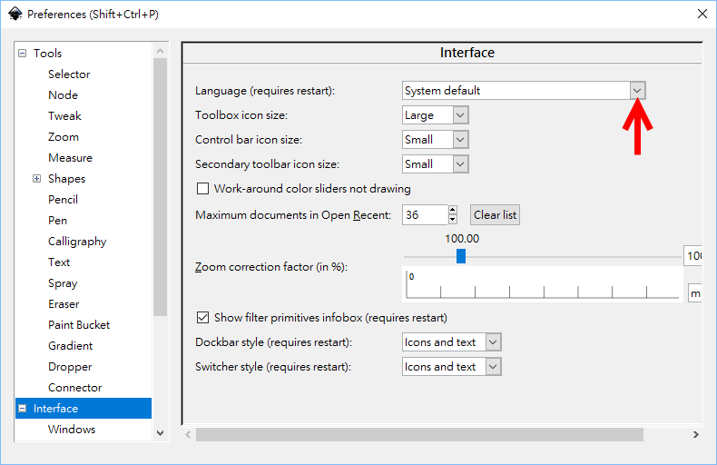
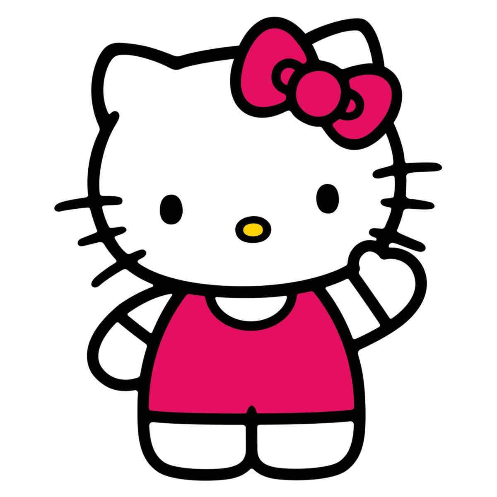
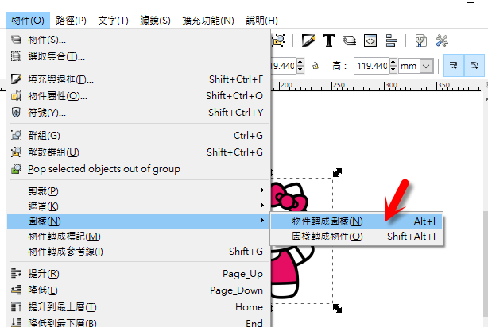
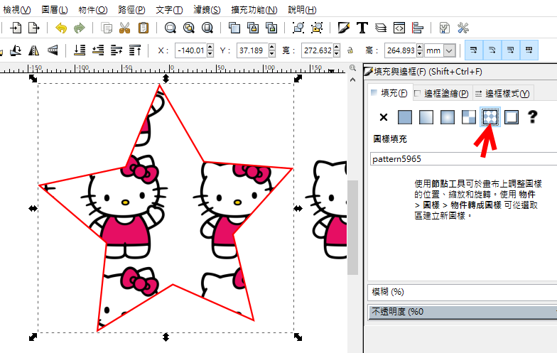
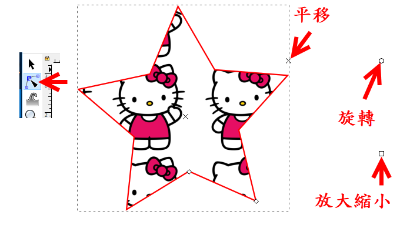
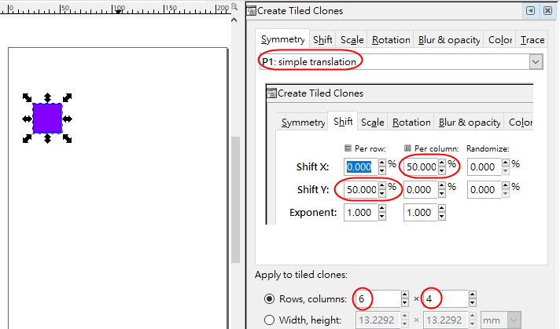
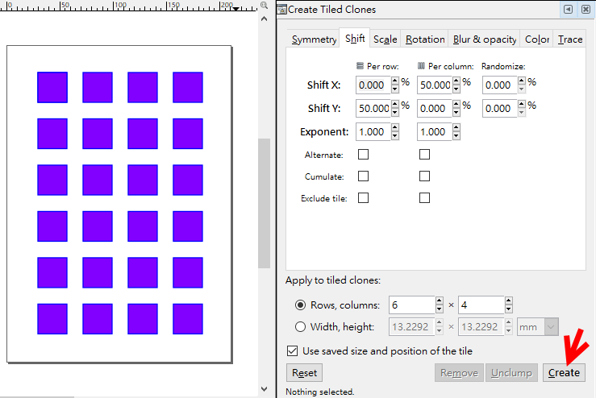
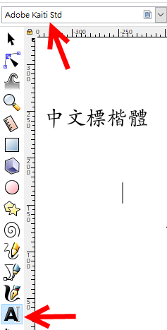

inkscape-0.92.3-x64.7z 教學影片所用版本
素材
| getemoji.com 取得 Icon 貼至 Inkscape 再轉換成路徑 |
tips:
點選下方顏色可改變內部顏色 按住Shift鍵再點選下方顏色可改變邊界顏色 |
語言設定
edit>>Inkscape preferences>>Interface
 |
| hello kitty coloring(google search) 將點陣圖轉成像向量圖 Hello Kitty.jpg  Tracing Hello Kitty SVG File Using Inkscape (Youtube 8:07 here) |
| Tracing in inkscape(11:40)(YouTube) path-->trace bitmap-->break apart Mickey mouse coloring(google search) |
| Tracing and Cleaning Up Simple Images with Inkscape (Youtube 5:10 here ) |
| Pattern (圖樣) 匯入圖片 將物件轉為圖樣    |
  |
 |
| Inkscape(Youtube Search) |